Rurrenabaque
Beni Department · Jungle and tropics
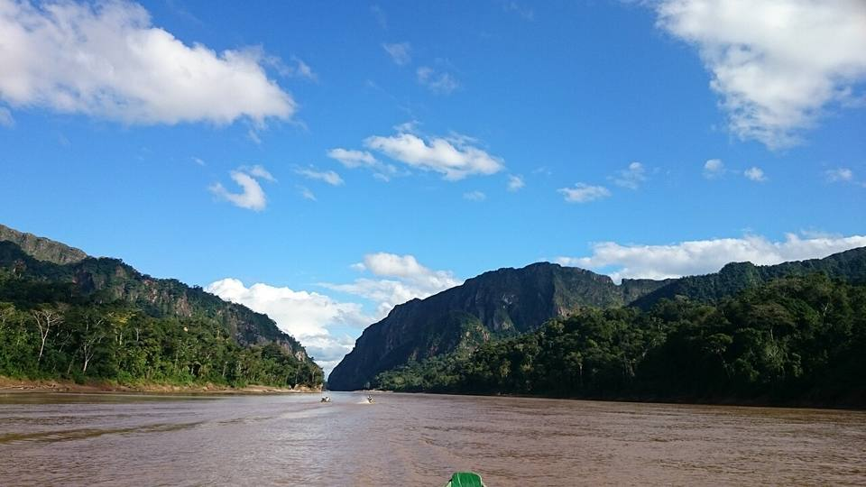
Rurrenabaque is a small tropical town on the Beni river, between the last foothills of the Andes and the vast Amazon plain. Many people arrive by small plane after a spectacular flight from La Paz. It's the base for trips into the Madidi jungle or the pampas.
Things to do
- Base for the jungle (Madidi) and the pampas
- El Chorro natural pool and viewpoint
What to eat
- River fishSurubí, pacú or dorado, grilled over a wood fire or fried, with rice, cassava and plantain. Delicious by the water, in the Llanos and the Amazon.
- MasacoMashed plantain or cassava with charque or cheese. Rich and filling.
- Tropical fruitMangoes, pineapples, papayas, achachairú (a small tangy fruit) and fresh juices everywhere for a few bolivianos.
How to get to Rurrenabaque
La Paz Flight · 40 to 50 min flight
BoA and EcoJet flights (small planes, often full: book ahead).
A spectacular flight over the Andes.
Madidi Boat · 3 to 5 h by canoe
Included in the tour (agency or community lodge).
Pampas 4x4 tour or excursion · 3 h by 4x4 + boat
Included in the pampas tour.
Beni reserve Road (bus, car) · 5 to 7 h
Bus to San Borja, then transport arranged there.
Dirt road, hard going in the rainy season.
Coroico Road (bus, car) · 10 to 13 h
La Paz to Rurrenabaque buses that pass through Yolosa.
Trinidad Road (bus, car) · 10 to 14 h
Bus via San Borja, partly on dirt roads (difficult in the rainy season).
La Paz Road (bus, car) · 12 to 15 h
Night bus from the Minasa terminal (Villa Fátima).
Photos of Rurrenabaque
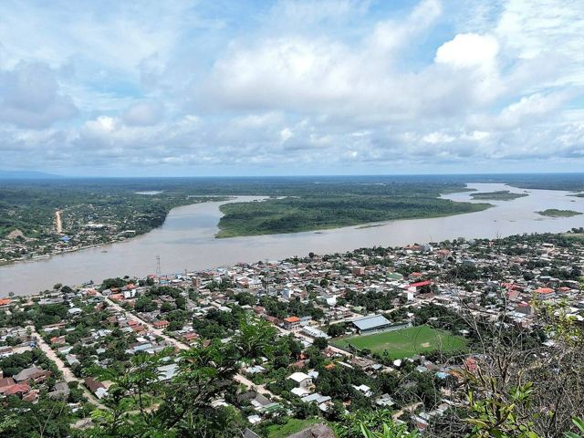

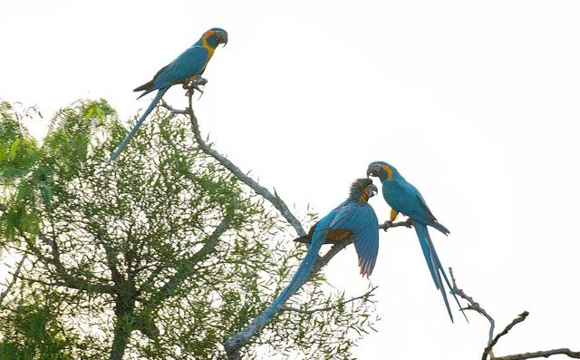
.jpg){kind=link}
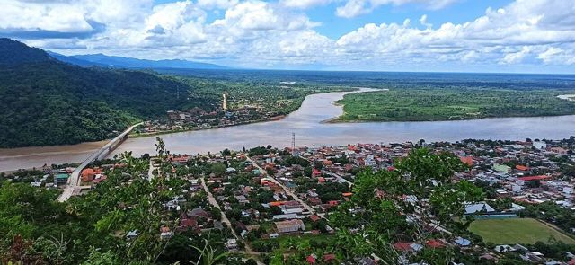

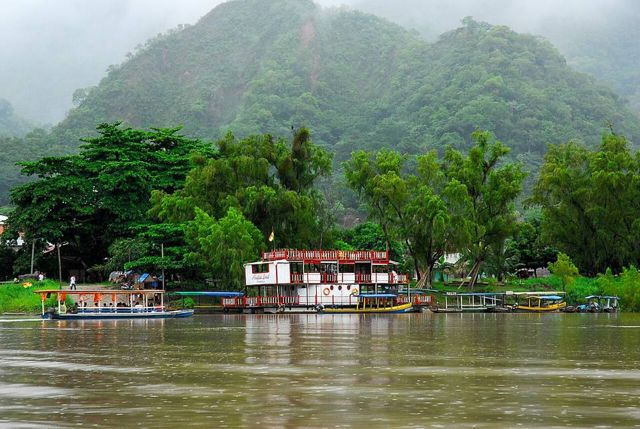

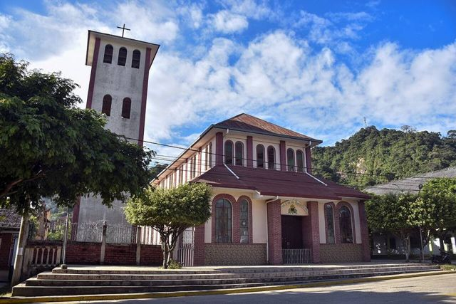

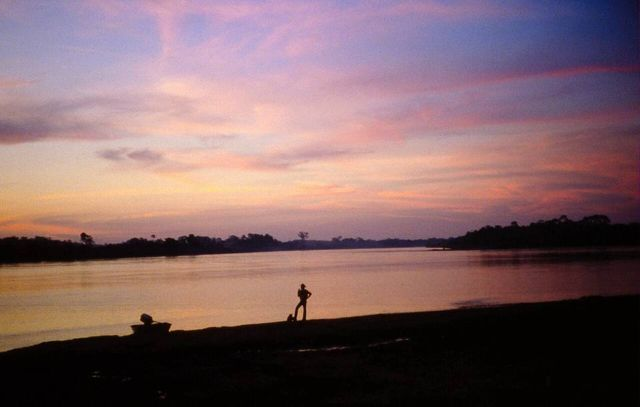

More places in this region
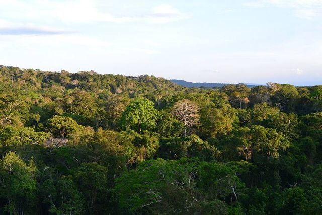
Madidi National ParkOne of the most biodiverse places on the planet. Primary forest.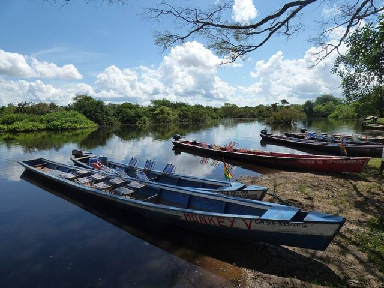
Yacuma PampasWetlands teeming with animals: caimans, capybaras and pink river dolphins.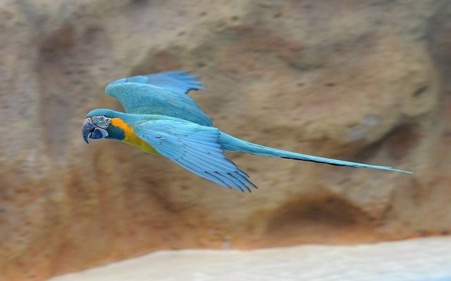
Barba Azul reserveBeni savannas, refuge of the blue-throated macaw, one of the rarest parrots in the world.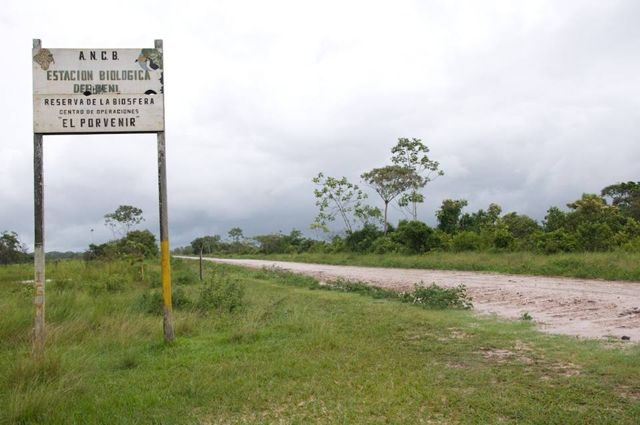
Beni Biosphere ReserveSavannas, forests and lagoons near San Borja: a reserve rich in wildlife, still rarely visited.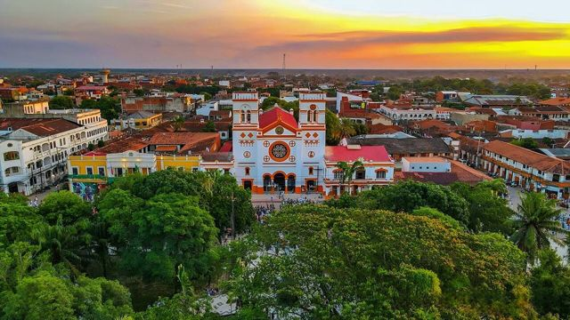
Trinidad (Llanos de Moxos)Capital of the Beni, with flood plains and Moxeño culture.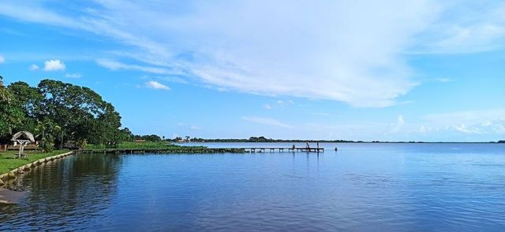
Laguna SuárezA big, quiet lagoon on Trinidad's doorstep, for swimming and eating fish.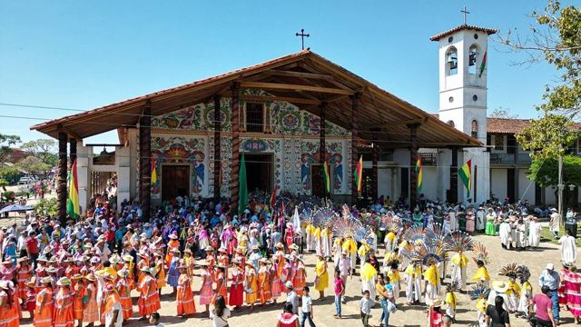
San Ignacio de MoxosA former Jesuit mission on the Beni plains, famous for the Ichapekene Piesta (UNESCO).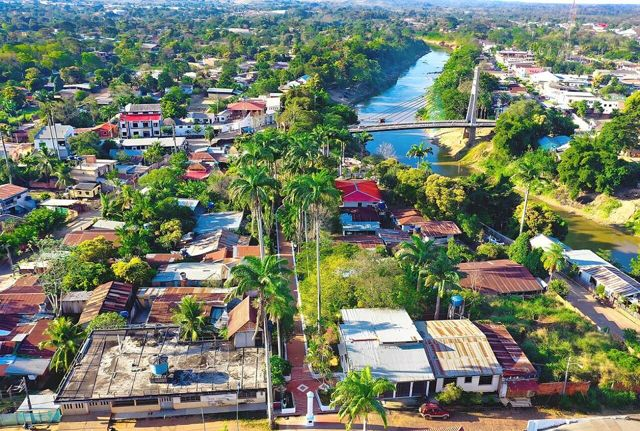
CobijaThe capital of Pando, on the Acre river facing Brazil: gateway to the northern Amazon.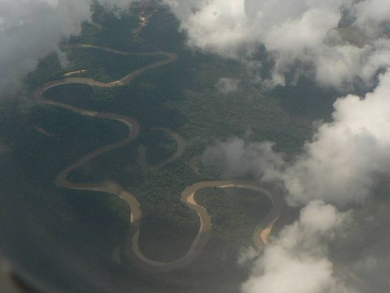
Porvenir and the Tahuamanu riverAn Amazon village near Cobija: boat trips on the Tahuamanu and a natural pool.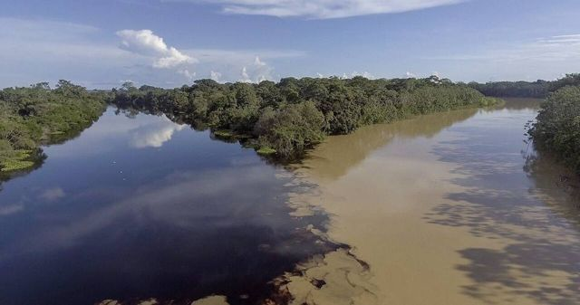
Puerto Rico and the Manuripi reserveA small town where two rivers meet, gateway to the Manuripi Amazon reserve.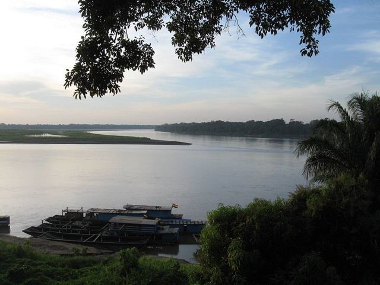
RiberaltaAn Amazon river port where the Beni meets the Madre de Dios, capital of the Brazil nut.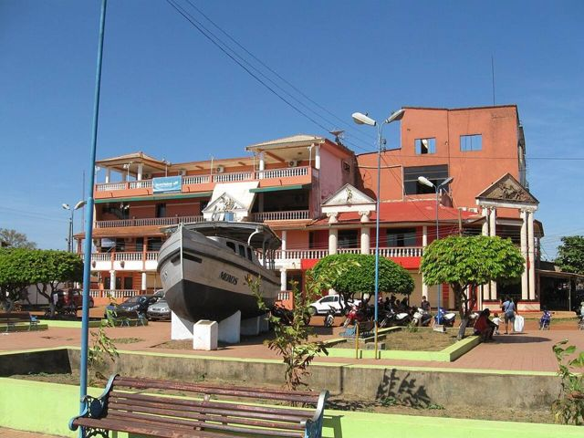
GuayaramerínA border town on the Mamoré river, facing the Brazilian town of Guajará-Mirim.